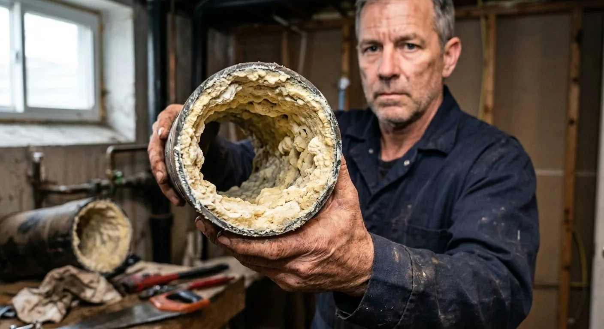
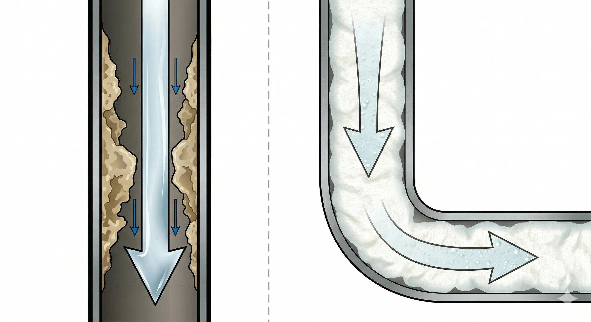
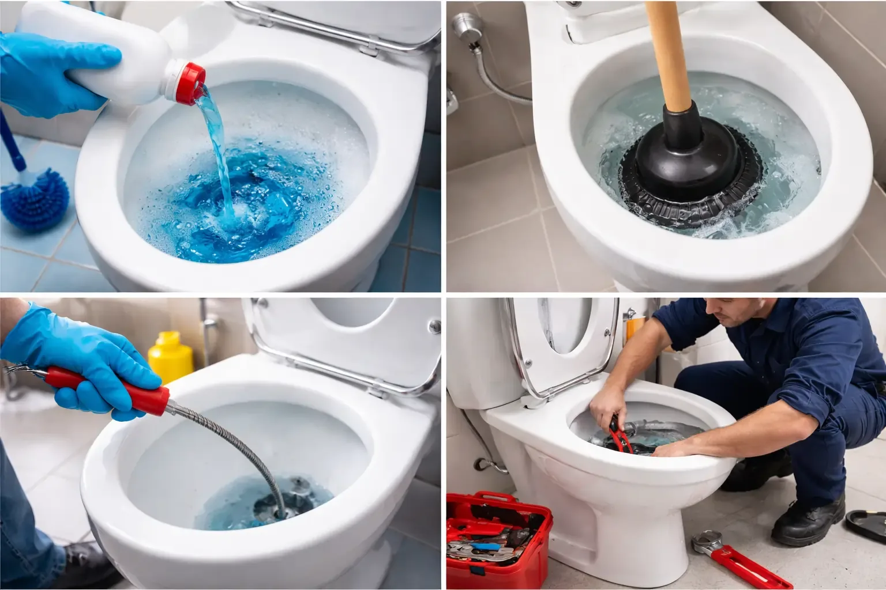
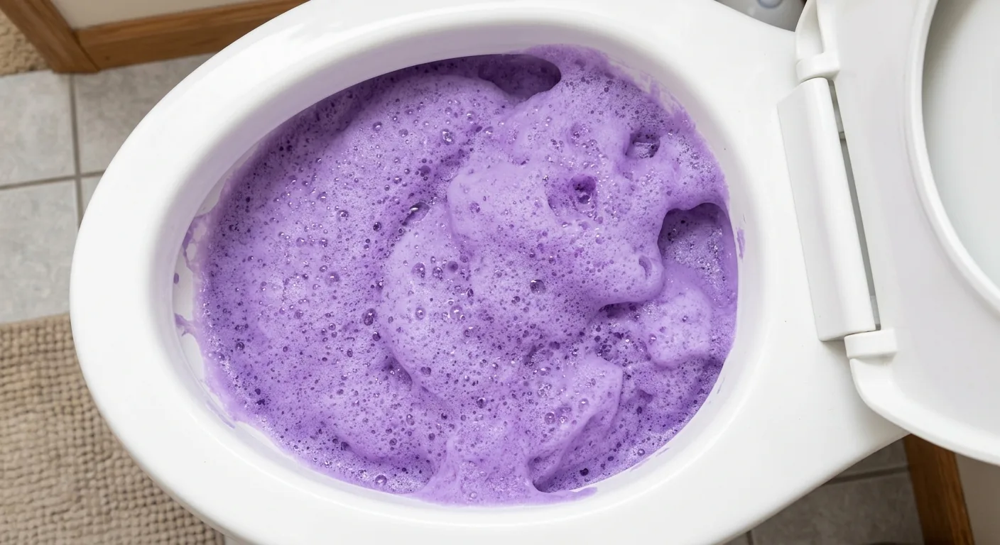
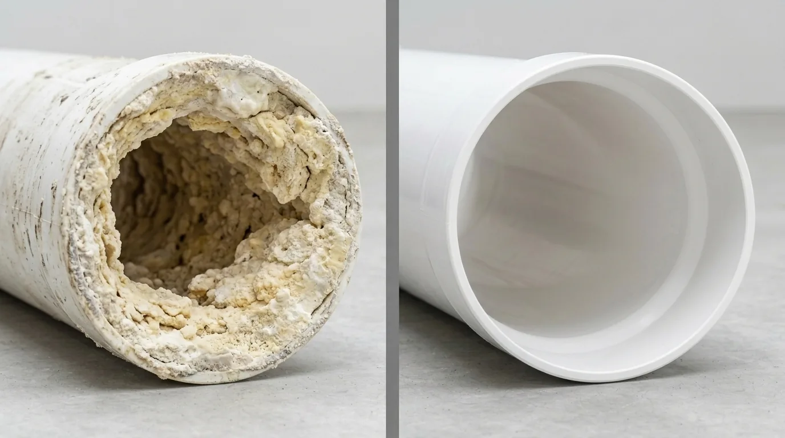

Het was de geur die Jeroen de Vries als eerste deed opkijken. Zoetig, muf, een beetje rioolachtig — terwijl de badkamer van de jaren-70-eengezinswoning in Utrecht er brandschoon uitzag. De tegels glommen, het toilet was net schoongemaakt, een vers toiletblokje hing aan de rand.
De Vries trekt handschoenen aan en zaagt een stuk uit de afvoerbuis. Het ligt nu op de werkbank: zo ’n twintig centimeter buis, de binnenkant bedekt met een centimeterdikke, korstige laag aanslag. Keihard. Laag over laag. Als de binnenkant van een oude waterkoker.
„Deze ”, zegt De Vries terwijl hij hem voor de camera houdt, „kwam uit een doodnormaal gezinstoilet. Vier personen. Rijtjeshuis. En zo ziet het er in de meeste huishoudens uit — alleen ziet niemand het ooit.”
Jeroen de Vries is meesterloodgieter in Utrecht, familiebedrijf in de derde generatie. 28 jaar in het vak. Meer dan 15.000 toiletten gerepareerd, ontstopt, uit elkaar gehaald. En hij zegt: „Wat mensen schoon noemen en wat er werkelijk in hun leidingen gebeurt — dat zijn twee totaal verschillende werelden.”
De vieze waarheid die uw loodgieter u nooit vertelt
Iedereen gebruikt zijn toilet elke dag. De meeste mensen maken het ook regelmatig schoon — borstel, chloorreiniger, misschien een blokje onder de rand. En dan denken ze: klaar.
Maar wat gebeurt er achter het porselein, waar niemand ooit kijkt? In de afvoerleidingen die van uw toilet naar het riool lopen?
De Vries legt het zo uit: „Denk aan tandplak. U kunt tien keer per dag met uw tong over uw tanden gaan — de plak blijft zitten. Alleen echt poetsen haalt hem weg. Precies dat gebeurt in uw leidingen. Alleen ziet u het niet — en niemand komt er ooit met een borstel bij.”
Biologen noemen het biofilm. Een levende laag van bacteriën, schimmels, kalk, vet en organische resten. Hij begint vanaf dag één te groeien en bouwt zich steeds verder op. Elke spoeling duwt water door de buis — maar de biofilm klampt zich vast aan de wand, als een ring die zich langzaam sluit. Wetenschappers spreken zelfs van een „biofilmpantser ”, omdat gewone middelen er nauwelijks vat op krijgen.
En daar zit het probleem: alles wat u op het porselein schrobt, heeft nul effect op de biofilm in de leidingen. Het oppervlak glanst — de leidingen erachter slibben verder dicht.

„Ik zeg altijd tegen mijn klanten: u poetst uw tanden, maar nooit uw keel. Het toilet ziet er schoon uit, maar de leidingen zijn een ramp.”
— Jeroen de Vries, meesterloodgieter, Utrecht
De 4 fasen van een verstopte leiding — en waarom u fase 1 en 2 niet ziet
In 28 jaar heeft De Vries steeds hetzelfde patroon gezien. Elke verstopping volgt hetzelfde verloop — en het begint niet op het moment dat het water blijft staan.
Waarom gewone reinigers het probleem niet oplossen — en het vaak erger maken
De Vries heeft in al die jaren alles voorbij zien komen. En hij zegt: geen van de gangbare producten lost het eigenlijke probleem op.

WC-Eend, Glorix & co.: Die reinigen het porselein. De vloeistof loopt rechtstreeks door de buis, zonder noemenswaardig contact met de wand. Dat is alsof u water door een verstopte buis giet en hoopt dat de aanslag vanzelf oplost.
Chemische ontstoppers (HG, Drano): Agressieve bijtende stoffen die de bovenste laag van de biofilm aantasten — maar ook de buis zelf. Oudere leidingen worden poreus en bros. De Vries: „Ik heb leidingen uitgebouwd die compleet weggevreten waren door chemische ontstoppers. De verstopping was weg — en de buis ook.”
Ontstopper (plopper): Duwt de verstopping een stukje verder naar beneden. De biofilm blijft volledig onaangeroerd. De verstopping komt gegarandeerd terug.
Ontstoppingsveer: Boort een gat door de verstopping. Het water stroomt weer — door een gat in de biofilm. De wanden blijven net zo smerig. Twee maanden later hetzelfde verhaal.
Spoedmonteur (150 –300 €): Gebruikt meestal dezelfde veer of een hogedrukreiniger. De buis is een paar weken beter — dan groeit de biofilm terug, omdat de oorzaak nooit is weggehaald.
De ontdekking waar Jeroen de Vries eerst aan twijfelde — en die hem daarna overtuigde
In het voorjaar van 2024 bezoekt Jeroen de Vries de VSK-vakbeurs in Utrecht en raakt aan de praat met een collega die net terug is van een vakbeurs in Osaka. De collega vertelt hem over een reinigingspoeder dat in de Japanse installatiebranche al jaren stilletjes de standaard is. Een poeder dat u in het toilet giet, waar het opschuimt en de biofilm in de leidingen van binnenuit oplost.
De Vries is sceptisch. In 28 jaar heeft hij te veel producten gezien die alles beloofden en niets waarmaakten.
Maar de collega laat hem een video zien: een buis, vanbinnen compleet dichtgeslibd. Poeder erin, water erbij, schuim omhoog. 30 minuten later: de buis ziet eruit als nieuw.
„Ik heb die video drie keer bekeken ”, zegt De Vries. „Toen heb ik meteen een verpakking besteld.”
Het product heet Fuugu.
Waarom Fuugu werkt waar al het andere faalt — in uw leidingen
Het fundamentele probleem van elke vloeibare reiniger is natuurkunde. Vloeistof stroomt naar beneden. Ze volgt de zwaartekracht, loopt langs het laagste punt van de buis en raakt de zijwanden en de bovenkant nauwelijks. Maar de biofilm zit overal — 360 graden rondom.
Fuugu werkt volgens een ander principe: schuim.
Het poeder gaat in het toilet en wordt geactiveerd met warm water. Binnen enkele seconden ontstaat een dicht, stabiel microschuim dat zich door de buis verspreidt — niet naar beneden, maar in elke richting. Het schuim drukt tegen de wanden, vult elke holte en omhult de biofilm volledig.
Dan gaat de gepatenteerde microschuimtechnologie aan het werk:
Stap 1: Het schuim omsluit de biofilm volledig en dringt door in zijn structuur.
Stap 2: Natuurlijke enzymen in het schuim breken de organische bestanddelen van de biofilm af — vet, kalk, bacteriekolonies, organische resten.
Stap 3: E én gewone spoeling spoelt de losgemaakte biofilm weg. De wanden zijn schoon — als op dag één.

„De eerste keer dat ik Fuugu in een oude buis deed, kon ik letterlijk zien hoe het schuim de aanslag van de wand tilde. Na 30 minuten was de binnenkant grijs in plaats van zwart. Na de tweede behandeling was hij schoon.”
— Jeroen de Vries
Wat de meeste mensen niet weten: uw leidingen zijn een broedplaats voor schadelijke bacteriën
Het gaat niet alleen om verstoppingen. Wat veel mensen niet beseffen: het toilet is een van de grootste hygi ënerisico ’s in huis — en niet vanwege het porselein.
Wetenschappers van de University of Colorado hebben aangetoond dat elke toiletspoeling een zogenoemde „toilet plume ” veroorzaakt. Microscopisch kleine waterdruppels worden tot 1,8 meter de lucht in geslingerd. Die druppels dragen bacteriën, virussen en schimmelsporen mee — en die komen niet alleen uit de pot, maar ook uit de biofilm in de leidingen.
De deeltjes landen op uw handdoek. Op uw tandenborstel. Op de vloer. Op elk oppervlak in uw badkamer.
Zolang de biofilm in de leidingen zit, is elke spoeling een bacteriedouche voor uw badkamer. Fuugu pakt de oorzaak aan — niet de symptomen.
Wat gebruikers zeggen na hun eerste behandeling
„Bij ons liep het toilet al zeker een half jaar in slakkengang leeg. Dat geborrel ’s nachts maakte me gek. Ik had al een offerte van de loodgieter: 240 euro voor een grondige reiniging. Toen heb ik Fuugu geprobeerd — eerlijk gezegd als laatste redmiddel. Poeder erin, schuim omhoog, 30 minuten wachten, doortrekken. Het water schoot erdoorheen als nieuw. 240 euro bespaard, voor 15 euro. Ongelooflijk.”
„Ik ben 74 en woon alleen. Twee keer per jaar moest de loodgieter komen — elke keer 180 euro. Mijn kleinzoon gaf me Fuugu met Kerst. Ik dacht: wat moet dit nu weer voorstellen. Maar ik heb het geprobeerd. Dat is acht maanden geleden. Sindsdien: geen loodgieter, geen problemen, geen rekeningen. Mijn kleinzoon krijgt dit jaar een extra grote portie stamppot.”
„Ik heb alles geprobeerd. Ontstopper, de plopper, zelfs de veer van de bouwmarkt. Niets hielp voor lang. Ik was sceptisch over Fuugu — weer zo ’n wondermiddel. Maar toen zag ik het schuim omhoogkomen en werken. Je ziet de viezigheid letterlijk verdwijnen. En het mooiste: het probleem komt niet terug. Nu vier maanden, alles vrij.”
„We hebben een dochter van 2 die net de badkamer heeft ontdekt. Alles wordt aangeraakt, gelikt, onderzocht. Toen ik las wat er bij elke spoeling door de badkamer vliegt, werd ik er misselijk van. Sindsdien gebruik ik Fuugu om de twee weken. Geen scherpe chemische dampen, geen handschoenen nodig, gewoon erin gieten en klaar. Voor mij de beste hygi ëne-upgrade voor een gezinsbadkamer.”
„Het was zaterdagavond, tien uur, we hadden visite en het toilet deed het niet meer. Spoedmonteur: 280 euro. Voor 20 minuten werk. Op maandag bestelde mijn zoon Fuugu en zei: mam, eens per maand één zakje erin en je hebt rust. Zeven maanden later — geen enkel probleem meer. Die 280 euro was mijn duurste en tegelijk mijn laatste spoedrekening.”

Fuugu werkt overal waar leidingen kunnen verstoppen
Wat begon als toiletreiniger, werkt overal waar leidingen dichtslibben en biofilm groeit:
Toilet: Biofilm, verstoppingen, geurtjes — de belangrijkste toepassing.
Wastafel: Haren, zeepresten, tandpasta-aanslag in de leidingen.
Douche/bad: Haren, shampooresten, kalkaanslag in de afvoer.
Gootsteen: Vet, etensresten, olie-aanslag in de afvoer.
Wasmachine: Pluizen en wasmiddelresten in de afvoerslang.
E én product voor elke afvoer in huis. In plaats van vijf verschillende speciaalreinigers die allemaal alleen aan de oppervlakte werken.
Waar koopt u het origineel? (Pas op voor namaak)
Fuugu is uitsluitend verkrijgbaar via de officiële webshop van de fabrikant. Niet op Amazon. Niet op bol. Niet bij de Kruidvat of de Albert Heijn.
De Vries waarschuwt nadrukkelijk: „Op Amazon en Marktplaats duiken inmiddels namaakproducten op die er hetzelfde uitzien, maar heel andere ingredi ënten bevatten. Ze schuimen wel, maar doen niets met de biofilm. In het ergste geval beschadigen ze uw leidingen.”
Waarom niet in de winkel? Omdat Kruidvat en Albert Heijn als tussenhandel de prijs bijna zouden moeten verdubbelen. Door rechtstreeks vanaf de fabriek te verkopen, kan de fabrikant de beste prijs bieden — inclusief verse productie, kopersbescherming en een geld-terug-garantie.
NU: Tot 70% korting — alleen zolang de voorraad strekt
In het kader van de najaarsactie biedt de fabrikant Fuugu momenteel aan met tot 70% korting. De magazijncapaciteit is beperkt — als de huidige partij uitverkocht is, duurt het aanvullen meestal vier tot zes weken.
Controleer nu of Fuugu nog beschikbaar is voor uw regio: